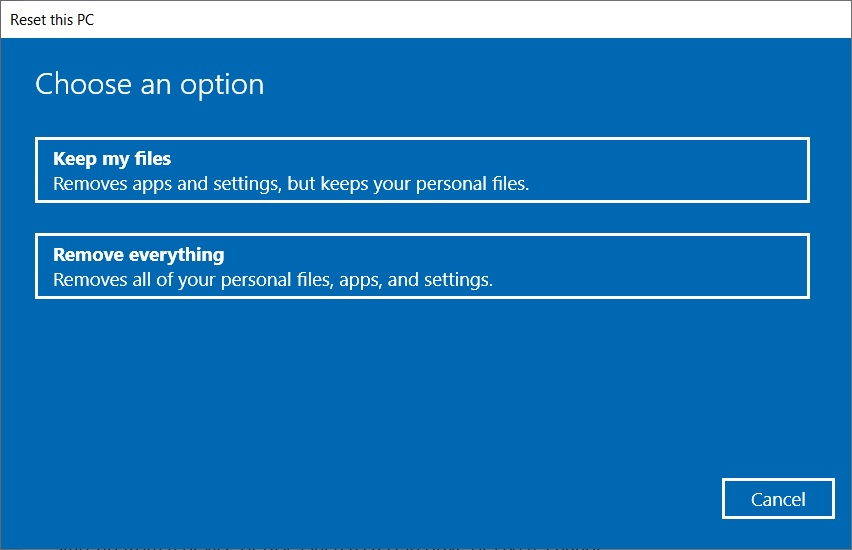

3 cách cài lại Win 10 cho laptop đơn giản nhất
Cài lại hệ điều hành Windows 10 là một thủ tục quan trọng mà bất kỳ người dùng máy tính nào cũng nên biết. Điều này có thể giúp giải quyết nhiều vấn đề, từ hiệu suất máy tính kém, sự cố hệ thống đến việc làm máy tính trở lại trạng thái ban đầu. Trong bài viết này, chúng tôi sẽ hướng dẫn cách cài lại Win 10 cho laptop thông qua ba cách dễ thực hiện nhất.
1. Chuẩn Bị Trước Khi Cài Lại
Trước khi bắt đầu quá trình cài lại Windows 10, bạn cần thực hiện một số công việc chuẩn bị quan trọng.
-
Sao Lưu Dữ Liệu Quan Trọng: Để đảm bảo an toàn cho dữ liệu cá nhân và tệp quan trọng, bạn nên thực hiện sao lưu trước. Sử dụng ổ cứng ngoài hoặc dịch vụ lưu trữ đám mây để lưu trữ sao lưu.
-
Tải Xuống Phương Tiện Cài Đặt: Trước tiên, bạn cần tạo phương tiện cài đặt Windows 10. Truy cập trang web chính thức của Microsoft và tải xuống công cụ Media Creation Tool.
2. Hướng dẫn 3 cách cài lại Win 10 cho laptop đơn giản nhất
Cách 1: Sử Dụng Cài Đặt Gốc Windows 10 (Reset This PC)

Tính năng "Reset This PC" của Windows 10 cho phép bạn cài lại hệ điều hành một cách đơn giản và nhanh chóng mà không cần sử dụng bất kỳ phương tiện cài đặt nào khác. Tính năng này sẽ xóa tất cả dữ liệu và cài đặt của bạn, vì vậy bạn nên sao lưu dữ liệu quan trọng trước khi thực hiện.
- Bước 1: Mở "Settings" (Cài Đặt) và chọn "Update & Security" (Cập Nhật & Bảo Mật).
- Bước 2: Trong tab "Recovery" (Khôi Phục), chọn "Get started" (Bắt Đầu) bên dưới "Reset this PC."
- Bước 3: Bạn sẽ có tùy chọn để giữ lại các tệp cá nhân hoặc xóa hết dữ liệu trên máy tính. Chọn tùy chọn phù hợp và tiếp tục.
Cách 2: Sử Dụng Media Creation Tool của Microsoft
Media Creation Tool là một công cụ chính thức của Microsoft giúp bạn tạo phương tiện cài đặt và cài lại Windows 10.
- Bước 1: Tải và chạy Media Creation Tool từ trang web của Microsoft.
- Bước 2: Chọn "Upgrade this PC now" (Nâng cấp máy tính này ngay) và tiếp tục.
- Bước 3: Chọn "Keep personal files and apps" (Giữ lại tệp cá nhân và ứng dụng) trong quá trình cài đặt.
Cách 3: Sử Dụng Hình Ảnh ISO để Cài Lại Windows 10
Nếu bạn muốn sử dụng đĩa hoặc USB cài đặt, bạn có thể tải hình ảnh ISO chính thức của Windows 10 từ trang web của Microsoft.
- Bước 1: Tải xuống hình ảnh ISO từ trang web chính thức của Microsoft.
- Bước 2: Tạo USB bootable hoặc đĩa từ hình ảnh ISO.
- Bước 3: Khởi động từ phương tiện này và thực hiện quá trình cài đặt lại Windows 10.
3. Cài Đặt Cơ Bản Sau Khi Cài Lại Win 10 cho laptop
Để đảm bảo hệ điều hành hoạt động một cách trơn tru, bạn cần thực hiện những bước cơ bản sau đây:
-
Kết Nối với Mạng Internet và Cập Nhật Windows 10: Khi khởi động lại, kết nối máy tính với Internet và cập nhật Windows 10 để đảm bảo bạn có phiên bản mới nhất với các bản vá bảo mật.
-
Cài Đặt Driver Cho Laptop: Hướng dẫn cách tìm và cài đặt driver cần thiết để đảm bảo các thành phần phần cứng hoạt động đúng cách.
-
Cài Đặt Các Ứng Dụng Cơ Bản: Cài đặt các ứng dụng cơ bản như trình duyệt web, bộ văn phòng, phần mềm bảo mật, và các ứng dụng khác mà bạn thường sử dụng.
4. Phục Hồi Dữ Liệu Sau Khi Cài Lại
Việc phục hồi dữ liệu cá nhân từ sao lưu là một bước quan trọng để đảm bảo bạn không mất dữ liệu quan trọng. Nếu bạn đã cài đặt và sử dụng tính năng Sao Lưu Tệp và Lịch Trình trước khi cài lại Windows, bạn có thể dễ dàng khôi phục các tệp cá nhân.
- Mở "Settings" (Cài Đặt) và chọn "Update & Security" (Cập Nhật & Bảo Mật).
- Chọn "Backup" (Sao Lưu) từ menu bên trái và kiểm tra xem Sao Lưu Tệp và Lịch Trình đã được kích hoạt.
- Chọn "More options" (Tùy chọn khác) và bấm vào "Restore files from a current backup" (Khôi phục tệp từ sao lưu hiện tại).
5. Cách Tránh Các Lỗi Thông Thường
Khi cài lại Windows 10 cho laptop, có thể xuất hiện một số lỗi thường gặp. Dưới đây là một số lỗi phổ biến và cách giải quyết chúng:
-
Lỗi Không Kết Nối Internet: Kiểm tra xem bạn đã cài đặt driver mạng đúng cách và xác minh rằng kết nối mạng hoạt động bình thường.
-
Lỗi Thiếu Driver: Nếu gặp lỗi liên quan đến thiếu driver, hãy sử dụng đĩa driver của laptop hoặc tìm các driver phù hợp trên trang web của nhà sản xuất.
-
Lỗi Kích Hoạt Windows: Nếu bạn gặp thông báo kích hoạt Windows, nhập key sản phẩm hoặc liên hệ với Microsoft để giải quyết.
6. Bảo Trì Hệ Thống Sau Khi Cài Lại
Sau khi cài lại Windows 10 và khôi phục dữ liệu, bạn cần thực hiện các thủ thuật bảo trì hệ thống để giữ máy tính hoạt động ổn định:
-
Cập Nhật Hệ Thống Thường Xuyên: Đảm bảo máy tính của bạn luôn được cập nhật với các bản vá bảo mật và phiên bản mới nhất của các ứng dụng.
-
Sử Dụng Phần Mềm Bảo Mật: Cài đặt một phần mềm bảo mật đáng tin cậy để bảo vệ máy tính khỏi các mối đe dọa trực tuyến.
-
Làm Sạch Hệ Thống: Thực hiện việc làm sạch hệ thống định kỳ để loại bỏ các tệp không cần thiết và tăng hiệu suất máy tính.
Cài lại Windows 10 cho laptop có thể giúp bạn khắc phục nhiều vấn đề và làm máy tính trở nên nhanh hơn và ổn định hơn. Bằng cách sử dụng ba cách cơ bản mà chúng tôi đã hướng dẫn ở trên và tuân thủ các bước cài đặt và bảo trì sau cài đặt, bạn có thể thực hiện quá trình này một cách dễ dàng và hiệu quả. Hãy luôn nhớ sao lưu dữ liệu quan trọng trước khi tiến hành cài lại Windows 10 để đảm bảo an toàn cho tất cả thông tin quan trọng của bạn. Nếu bạn gặp khó khăn trong quá trình cài lại Win 10 cho laptop, bạn có thể nhờ trợ giúp từ bạn bè và người thân thông qua phần mềm điều khiển máy tính từ xa UltraViewer. Hãy tải ngay và trải nghiệm phần mềm miễn phí nhé!


Viết bình luận (Cancel Reply)